Creating a Static Blog with Jekyll, Dev Containers & Azure CDN!
I’ve always wanted to create my own blog to share my solutions to different coding problems I’ve experienced over the years. I’ve finally made time to create one, so here is how I did it.
I started with a few requirements:
- Static site generator - I wanted to use a static site generator for its simplicity and speed benefits.
- Custom domain - Use the domain I purchased:
alexoswald.com - Fast & secure - It needs to be secure and fast, with caching.
- Cheap, less than $50 per year - The domain is $20 a year from GoDaddy with privacy. That leaves $30 for hosting and security.
I am a Microsoft fan and .NET fanatic so I will most always utilize their tools. Another few requirements regarding personal preferences:
- Azure DevOps for version control
- Azure Pipelines for builds and release deployments
- Azure CDN
In this guide, we will setup Azure to host a blog via Azure CDN. We will use Jekyll to generate our static site. Since we don’t want to deal with installing Ruby or Jekyll, we will develop the site in Visual Studio Code using dev containers. With dev containers, we can develop inside a container that already has Ruby and Jekyll installed.
Prerequisites
-
Azure subscription
-
Azure DevOps
-
A custom domain
-
Visual Studio Code with the Remote - Containers extension
-
Docker Desktop
Create a resource group in Azure
Create a resource group in Azure that will hold all of the blogs resources. In this instance, I’m naming the resource group AlexsBlogResourceGroup.
Setup storage account in Azure
Create a storage account in Azure
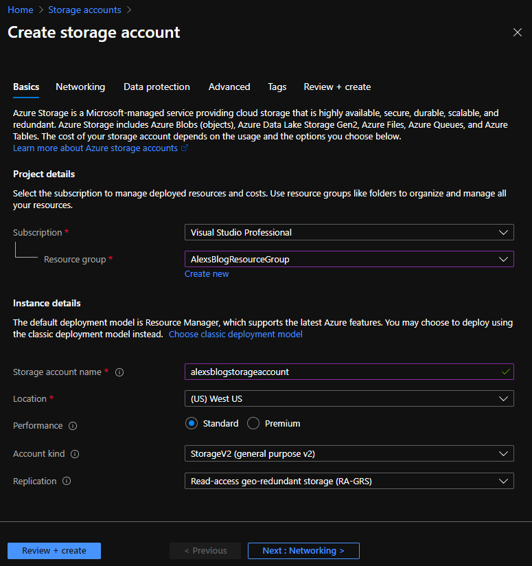
In the storage account, go to Static website. Set the Static website
option to Enabled.
Set Index document name to index.html (generated by Jekyll).
Set Error document path to 404.html (generated by Jekyll).
Save the change.
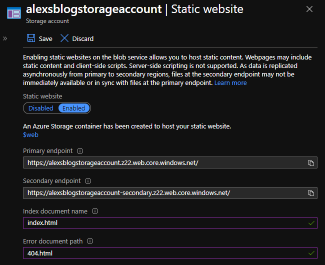
The Primary endpoint will be used in the next step.
Visit Settings > Access keys.
key1 will be used in the Azure pipeline to access the storage account.
Create Azure CDN endpoint
While viewing the storage account resource, under Blob service, go to Azure CDN.
From here, we are going to create a new Endpoint.
For CDN profile, select Create new, with the name of your choosing.
Set the Pricing tier to Premium Verizon so we can set HTTP rules later.
Set the Origin hostname to the static website Primary endpoint from above.
Enter the CDN endpoint name.
Click Create.
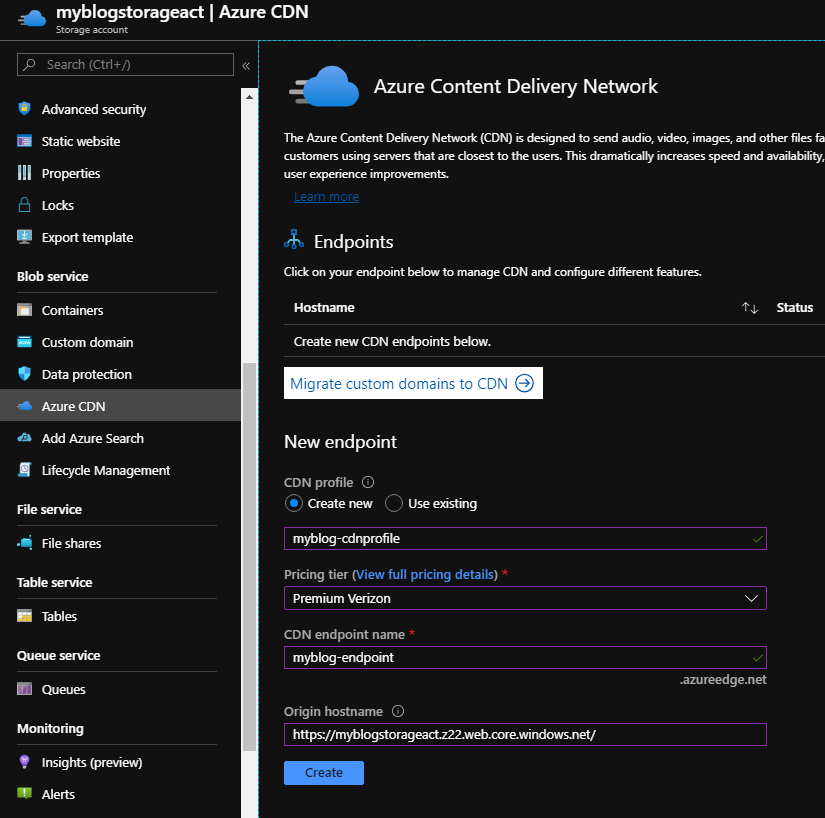
Navigate to the newely created resource.
Navigate to Settings > Origin and deselect HTTP. We only want to allow HTTPS.
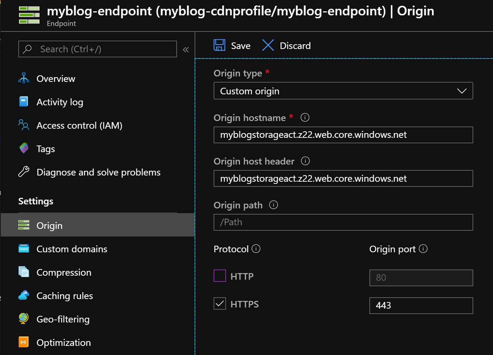
Create project in Azure DevOps
Login to your DevOps account: https://dev.azure.com/
Add a new project, making sure Version control is set to Git.
Navigate to Repos > Files.
Now we are going to Clone in VS Code for next steps.
Use Jekyll to generate the site inside a Dev Container
Check out Microsoft’s dev containers tutorial
We have an empty repo now open in VS Code. To get started, lets get our dev container running. To do this,
open the Command Palette and run the task Remote-Containers: Open Folder in Container.
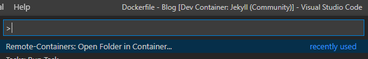
Select your repo folder. Once you do this, VS Code will ask you to choose the correct configuration files.
We will select Jeykll.
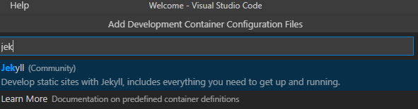
This will automatically create the dev containers config file, Dockerfile, and VS Code tasks for Jekyll.
I’ve made a few small modifications to the configuration files.
In the dev container Dockerfile lets uncomment the section to update and install other packages. I’d like to install git as well.
RUN apt-get update && export DEBIAN_FRONTEND=noninteractive \
&& apt-get -y install gitWe also want the bundler to install packages after the dev container is created. To do this, open devcontainer.json and uncomment the line "postCreateCommand": "bundle install",.
If you don’t already have the proper .gitignore file in your project directory, create one with the following contents (this file was generated for me by Azure Devops):
_site
.sass-cache
.jekyll-cache
.jekyll-metadataYour development environment is now running in a container so lets get down to business and create our Jekyll site.
Open a terminal window. Since our dev environment is running in a container with Linux, we are presented with a bash terminal.
Create a new Jekyll site in the current folder.
jekyll new ./Jekyll will create the site, and a Gemfile. Then it will run bundle install to install the gems specified in the Gemfile.
Your projects file structure should now be similar to the following. Items in green were created by Jekyll.
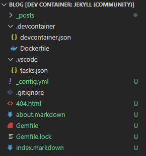
Now we are going to build and run the site to check it out. We can manually execute the commands, or use one of the two VS Code tasks that were created for us in tasks.json. Lets run the Serve task. Open the Command Palette and
search/click Tasks: Run Task, then click Serve.
After your site is built, navigate to http://localhost:4000/ in a browser.
Voilà, we now have a generated static website!
Create a build pipeline
We are going to create a build pipeline in Azure DevOps so the site is built each time a push is made to the master or a tag is created. The built site is stored as an Artifact and can be used in other pipelines.
Navigate to Pipelines > Pipelines and click Create Pipeline.
You will be asked where your code is. Select Azure Repos Git.
Then select your repository.
Choose the Starter pipeline. Now replace its contents with this yaml:
# azure-pipelines.yaml
# Trigger pipeline on any push to master and any tag creations
trigger:
branches:
include:
- master
tags:
include: ['*']
# Build on Ubuntu pool
pool:
vmImage: 'ubuntu-latest'
steps:
# Use Ruby
- task: UseRubyVersion@0
displayName: 'Use Ruby >= 2.5'
inputs:
versionSpec: '>= 2.5'
# Install Jekyll
- script: 'gem install jekyll bundler'
displayName: 'Install Jekyll and bundler'
# Install Jekyll dependency
- script: 'bundle install'
displayName: 'Install Gems'
# Run Jekyll and build the site
- script: 'bundle exe jekyll build'
displayName: Build
# Copy packaged site to the staging directory for publishing
- task: CopyFiles@2
displayName: 'Copy "_site" to staging directory'
inputs:
SourceFolder: '_site'
TargetFolder: '$(Build.ArtifactStagingDirectory)'
# Publish the artifact
- task: PublishBuildArtifacts@1
displayName: 'Publish Artifact: _site'
inputs:
ArtifactName: '_site'Click Save and run, specify commit message and options, then click Save and run again.
Create a Release Pipeline
Our site is built and stored in DevOps as an Artifact, waiting to be deployed. We will create a release pipeline that will deploy our site to Azure.
Navigate to Pipelines > Releases and click New pipeline.
Select Empty job
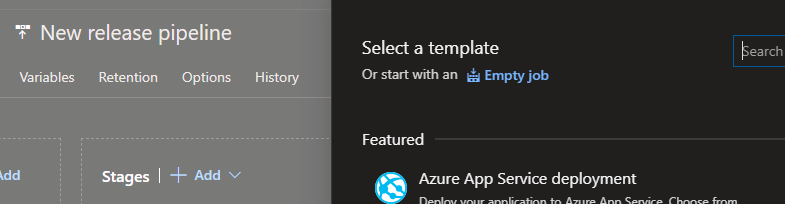
Click X to close the Stage pane.
Click Add an artifact.
Choose Build, select your Project, then select the build pipeline we created previously as the Source. Click Add.
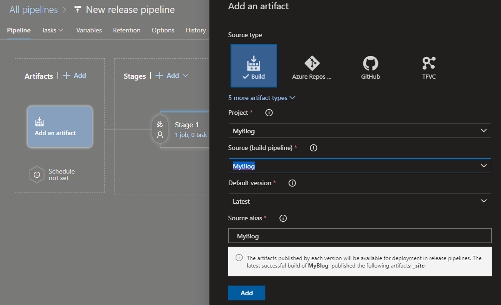
We have now added the artifact so it can be used by the pipeline.
Under Stage 1, click 1 job, 0 task.
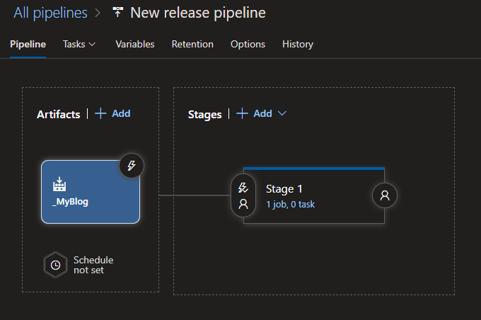
Add tasks
We have two new tasks to add.
- The first task is to Sync the files in the Artifact with your static website container in the Azure Storage account specified. Click the + to add a new task.
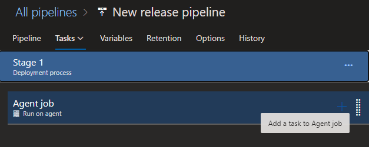
Add an Azure CLI task.
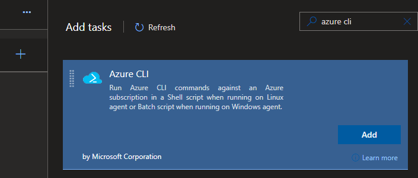
Configure the task:
- Update Display name to Sync files
- Set Azure Resource Manager connection
- Set Script Type to Batch
- Set Script Location to Inline script.
- Set the Inline Script to the following:
- Set the Working Directory. Click the … button and select the build folder.
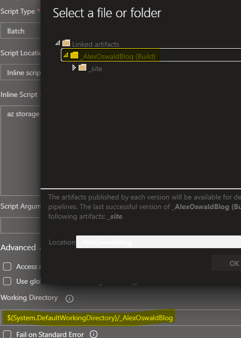
az storage blob sync --source $(source) --container $(containerName) --account-name $(storageAccount) --account-key $(key)Task example yaml:
# This code syncs with the storage blob you specify
# It won't delete all files, then upload. It will
# upload only what is needed, and only delete what
# is needed.
steps:
- task: AzureCLI@1
displayName: 'Sync files'
inputs:
azureSubscription: '$(subscription)'
scriptLocation: inlineScript
inlineScript: 'az storage blob sync --source $(source) --container $(containerName) --account-name $(storageAccount) --account-key $(key)'
workingDirectory: '$(System.DefaultWorkingDirectory)/_MyBlog'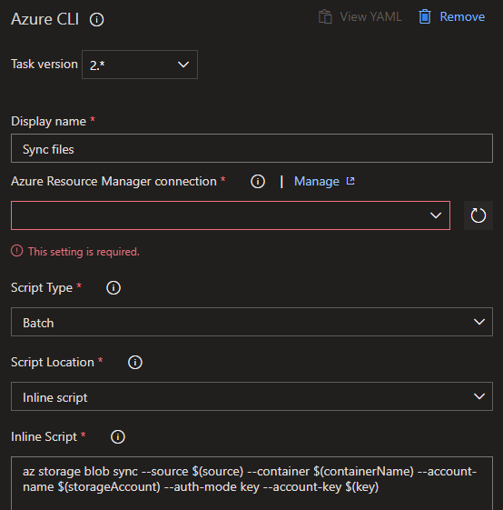
- The second task is to Purge the CDN of all cached files so the new site is pulled and cached.
Add another Azure CLI task.
Configure the task:
- Update Display name to Purge CDN
- Set Azure Resource Manager connection
- Set Script Type to Batch
- Set Script Location to Inline script.
- Set the Inline Script to the following:
az cdn endpoint purge --profile-name $(cdnProfile) --content-paths /* --name $(endpointName) --resource-group $(resourceGroup)Task example yaml:
# Purges the CDN's cache so it has to fetch new (updated)
# content from the storage container
steps:
- task: AzureCLI@1
displayName: 'Purge CDN'
inputs:
azureSubscription: '$(subscription)'
scriptLocation: inlineScript
inlineScript: 'az cdn endpoint purge --profile-name $(cdnProfile) --content-paths /* --name $(endpointName) --resource-group $(resourceGroup)'Add variables
Both of our tasks use multiple variables we need to define. While still editing Release, click Variables.
Add the following variables:
Sync files
source: Folder name in the artifact that contains the site, _site for Jekyll
containerName: $web (set by Azure)
storageAccount: The name of your storage account
key: Access key to your storage account
Purge CDN
cdnProfile: The name of the CDN Profile used by the Endpoint resource
endpointName: The name of the Endpoint
resourceGroup: The name of the Resource Group that contains the Endpoint
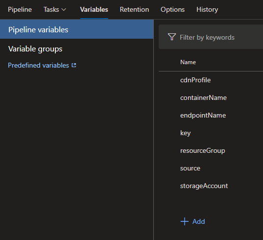
Make sure to Save your pipeline
Create a release
In the top right next to the Save button you just clicked, click Create release, after the dialog shows, click Create.
This process may take a few minutes. Once complete, open a browser and navigate to the storage accounts Primary endpoint you wrote down previously. You can also access the site via the CDN endpoint we created. The site will be https://endpointname.azureedge.net.
Your site should now be deployed! Horray!
Setup custom domain
Add DNS records to domain
In order to setup our custom domains Azure needs to verify you own the domain so we need to setup some CNAME records that Azure can verify.
Go to your domain providers DNS management page.
Add a CNAME with Host cdnverify.www and Value cdnverify.endpointname.azureedge.net.
Add a CNAME with Host www and Value endpointname.azureedge.net.
I’m using GoDaddy for my domains.
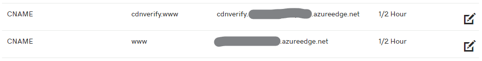
Add custom domain to the CDN endpoint
Navigate to the Azure CDN Endpoint resource.
Navigate to Settings > Custom domains > + Custom domain
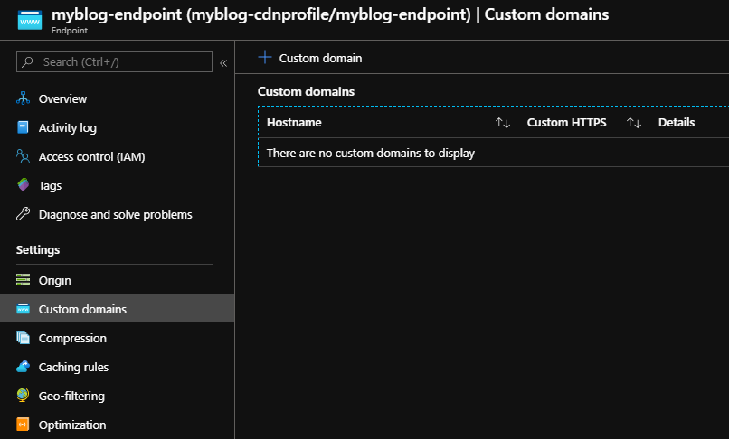
Fill in your www subdomain. If Azure is able to verify your CNAME record you will see the green check, otherwise there will be a red X.
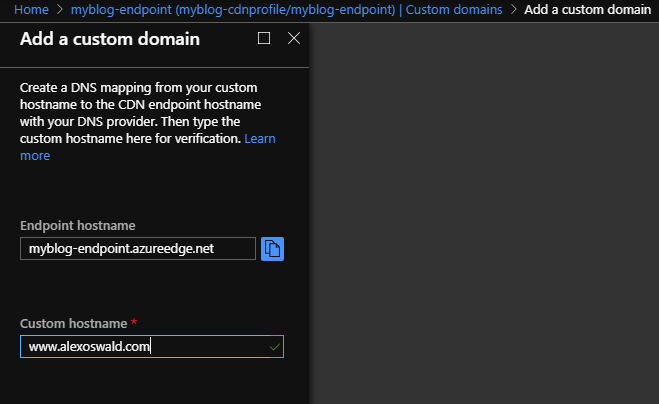
Now we need to enable HTTPS for the hostname.
Click your custom domain.
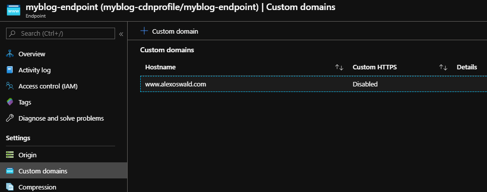
Set Custom domain HTTPS to On.
I am using Azure’s free certificates so I set Certificate management type to CDN managed.
Then click Save.
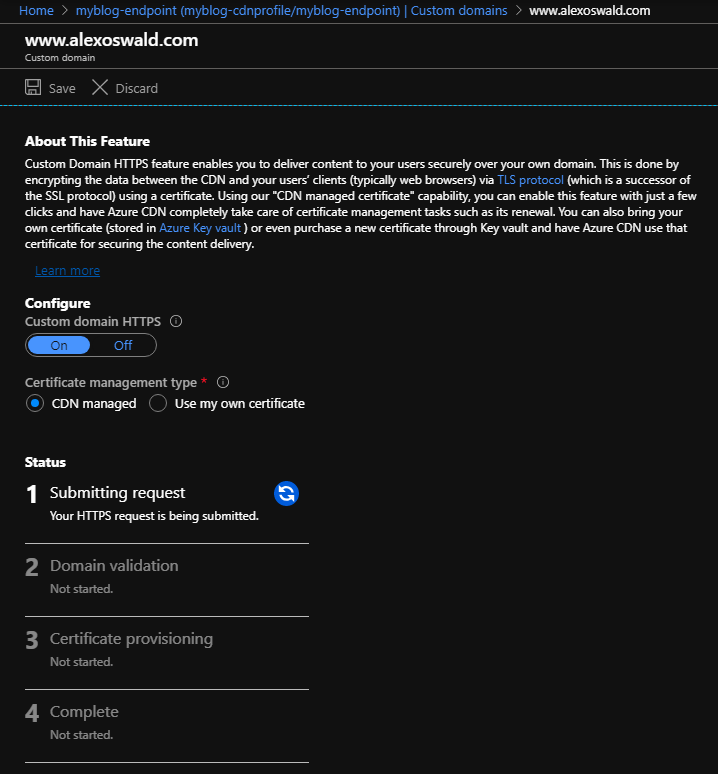
In my experience, the certificate deployment process can take 6-8 hours to complete.
Once complete, the screen should look like the below.
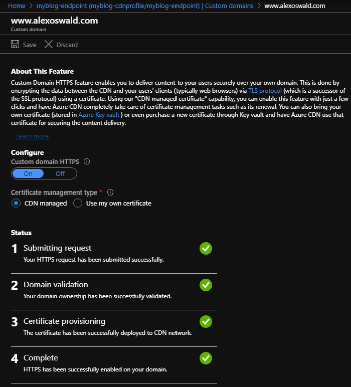
IMPORTANT
I was able to get my apex domain added as a custom domain to my Azure CDN endpoint, but Azure no longer supports using their free SSL certificates for apex domains. The solution I decided on involves setting up Azure CDN using thewwwsubdomain and then forwarding requests to the apex domain to the www subdomain. While I personally dislike having to use thewwwsubdomain at all, it is providing me a free SSL certificate.
Here is the error I got trying to add an endpoint for the apex domain.
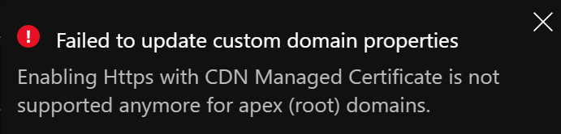
Setup HTTP rules for the CDN endpoint
There are some HTTP rules we want to set up to provide for better security and a better experience.
Navigate to your CDN profile resource and click Manage.
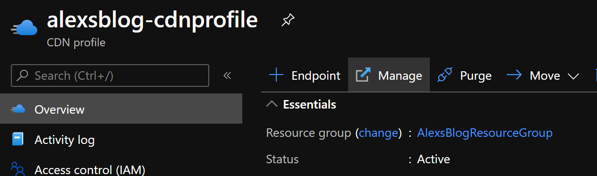
Then go to HTTP Large > Rules Engine V4.0.
I won’t go into detail on how to setup policys, as you can check the documentation.
We will prefix the Source to /80 since we are using a custom domain. Here are the docs. The next 5 characters is your account id. It should be in the top right corner in parenthesis of the CDN management page. The next part of the source is your CDN endpoint’s name.
Redirect HTTP to HTTPS
Any request to http will be redirected to use https.
Add a new rule.
If Request Request Scheme matches http.
Add feature.
- Feature
URLURL Redirect - Source
/80{act}/{endpoint-name}/(.*) - Destination
https://www.alexoswald.com/$1 - Code
301
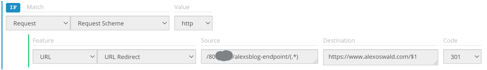
Caching
Cache content for 1 year on the server and 1 day on the client. Each time I update the site I purge the CDN, so I want the internal cache to be longer than the longest potential time between blog posts.
Add a new rule.
If General Always.
Add feature.
- Feature
CachingDefault Internal Max-Age - Status
200 - Value
525600 - Units
minutes
Add feature.
- Feature
CachingExternal Max-Age - Value
86400 - Units
seconds
HSTS Header
Instructs the browser to forward to https if needed.
Add a new rule.
If General Always.
Add feature.
- Feature
HeadersModify Client Response Header - Action
Append - Name
Strict-Transport-Security - Value
max-age=31536000; includeSubDomains
Redirect Root to WWW
NOTE
Since we are not able to add the free certificate to an endpoint with a custom domain that is an apex domain, we didn’t setup an endpoint for the apex domain. Therefore, we are not able to use HTTP Rules to redirect from root to www. Some other blogs I read did this, but it must of been before they disabled certificates for apex domains, or they purchased their own certificate. Since I am using GoDaddy, I will use their DNS management to forward root domain requests to
www.alexoswald.com. This forwardshttp://alexoswald.comandhttps://alexoswald.comtohttps://alexoswald.com.
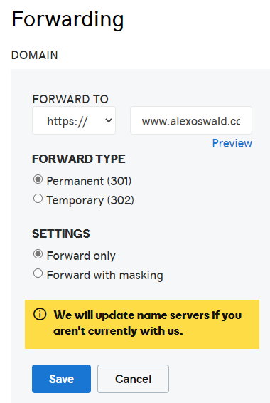
Other headers
I think it is important to add other security headers so I’ve made sure to have at least an A rating on Securityheaders.com. I suggest following the suggestions there to add other headers and improve your security.
References
Here are some other developer blog posts that helped me complete this project.
-
Arlan Nugara’s blog post helped me add the apex domain to the CDN, though I couldn’t use it because I can’t get the free certificate.
-
Glenn Price’s blog post helped me because at first my site wasn’t being served, and it turned out to be because I had forgot to set the
Index document nameandError document pathin the static site setup. -
Duncan Mackenzie’s blog post helped me understand how to add security headers and why the order matters.
-
SecurityHeaders.com/ is a great site that lets you check your HTTP headers and rates your sites security. The author, Scott Helme has some great blog posts on headers as well.
Thank you
I hope you enjoyed my first post. I learned a lot reading other developers blogs and documentation so I hope you did too.
If you have any comments, please feel free to email me at alex@oswaldtechnologies.com.
-Alex
Updates
2022-08-06
az storage blob syncno longer requires the argument--auth-mode key